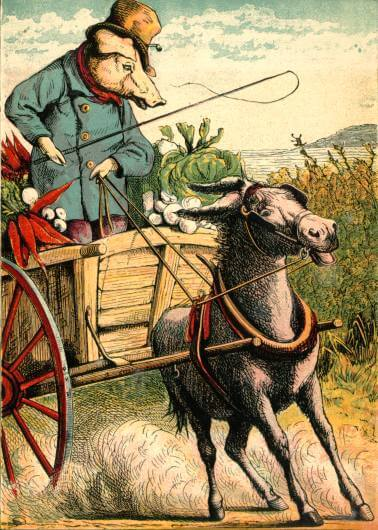
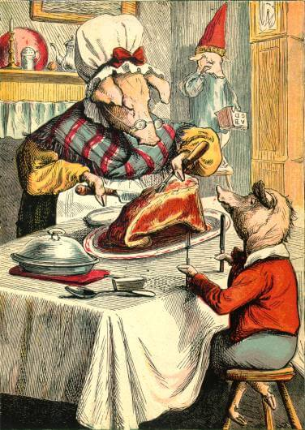

Five Little Pigs
Five Little Pigs
By: Joseph Martin Kronheim
More about the authorThe Little Pig who Went to Market.
There was once a family of Five Little Pigs, and Mrs. Pig, their mother, loved them all very dearly.
Some of these little pigs were very good, and took a great deal of trouble to please her.
The eldest pig was so active and useful that he was called Mr. Pig. One day he went to market with his cart full of vegetables,
but Rusty, the donkey, began to show his bad temper before he had gone very far on the road.
All the coaxing and whipping would not make him move. So Mr. Pig took him out of the shafts,
and being very strong, drew the cart to market himself. When he got there, all the other pigs began to laugh.
But they did not laugh so loudly when Mr. Pig told them all his struggles on the road. Mr.
Pig lost no time in selling his vegetables, and very soon after Rusty came trotting into the market-place,
and as he now seemed willing to take his place in the cart, Mr. Pig started for home without delay.
When he got there, he told Mrs. Pig his story, and she called him her best and most worthy son.
 
The Little Pig who Stayed at Home.
This little pig very much wanted to go with his brother, but as he was so mischievous that he could not
be trusted far away, his mother made him stay at home, and told him to keep a good fire while she went
out to the miller's to buy some flour. But as soon as he was alone, instead of learning his lessons,
he began to tease the poor cat. Then he got the bellows, and cut the leather with a knife, so as to
see where the wind came from: and when he could not find this out, he began to cry. After this he broke
all his brother's toys; he forced the drum-stick through the drum, he tore off the tail from the kite,
and then pulled off the horse's head. And then he went to the cupboard and ate the jam. When Mrs.
Pig came home, she sat down by the fire, and being very tired, she soon fell asleep. No sooner had she done so,
than this bad little pig got a long handkerchief and tied her in her chair. But soon she awoke and found out all
the mischief that he had been doing. She saw at once the damage that he had done to his brother's playthings.
So she quickly brought out her thickest and heaviest birch, and gave this naughty little pig such a beating as he did
not forget for a long time.
The Little Pig who had Roast Beef.
This little pig was a very good and careful fellow. He gave his mother scarcely any trouble, and always took a pleasure
in doing all she bade him. Here you see him sitting down with clean hands and face, to some nice roast beef, while his
brother, the idle pig, who is standing on a stool in the corner, with the dunce's cap on, has none. He sat down and quietly
learned his lesson, and asked his mother to hear him repeat it. And this he did so well that Mrs. Pig stroked him on the ears
and forehead, and called him a good little pig. After this he asked her to allow him to help her make tea. He brought everything
she wanted, and lifted off the kettle from the fire, without spilling a drop either on his toes or the carpet. By-and-bye he went
out, after asking his mother's leave, to play with his hoop. He had not gone far when he saw an old blind pig, who, with his hat
in his hand was crying at the loss of his dog; so he put his hand in his pocket and found a halfpenny which he gave to
the poor old pig. It was for such thoughtful conduct as this that his mother often gave this little pig roast beef.
We now come to the little pig who had none.
The Little Pig who had None.
This was a most obstinate and willful little pig. His mother had set him to learn his lesson, but no sooner had
she gone out into the garden, than he tore his book into pieces. When his mother came back
he ran off into the streets
to play with other idle little pigs like himself. After this he quarrelled with one of the pigs and got a sound
thrashing. Being afraid to go home, he stayed out till it was quite dark and caught a severe cold. So he was
taken home and put to bed, and had to take a lot of nasty physic.

The Little PIG who cried wee, wee, all the way home.
This little pig went fishing. Now he had been told not to go into Farmer Grumpey's grounds, who did not allow
any one to fish in his part of the river. But in spite of what he had been told, this foolish little pig
went there. He soon caught a very large fish, and while he was trying to carry it home, Farmer Grumpey
came running along with his great whip. He quickly dropped the fish, but the farmer caught him, and as
he laid his whip over his back for some time, the little pig ran off, crying, “Wee, wee, wee,” all the way home.